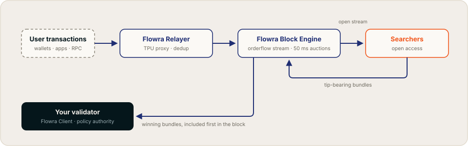

Flowra Documentation
Flowra is institutional-grade validator infrastructure for Solana, built on two commitments:
- Control. Validators define exactly what is allowed into their blocks through the Programmable Block Policy (PBP): sanctions screening, denylists, MEV posture, priority rules.
- Accountability. Those policies are enforceable and checkable, not promised. Flowra runs an Open Orderflow Auction (OOA): pending transactions are streamed openly and bundle competition happens in transparent 50 ms auctions, so enforcement can be verified rather than taken on faith.
Open competition also raises tips and validator returns. The product is accountable block production; better economics come with it.
Network status
Flowra is currently rolling out toward mainnet. Endpoints, on-chain program addresses, and client releases are published on this site as they go live. Values marked TBD are not yet final; see the Roadmap for the current phase.
Start here
Choose your path
How it works, in one minute

- User transactions arrive at the Flowra Relayer, which fronts the validator's TPU and deduplicates the flow.
- The Block Engine broadcasts the flow to searchers over a standardized gRPC stream.
- Searchers submit tip-bearing bundles into 50 ms auction cycles.
- The Block Engine simulates the bundles, drops any that revert, and selects the highest-tipping, non-conflicting set, subject to the validator's block policy.
- Winning bundles are forwarded to the leader and included first in the block.
Why open the orderflow?
Solana has no public mempool. Pending transactions flow directly to leaders, so orderflow lives in private channels, and everything downstream of that is unverifiable: users cannot see fair fee levels, sandwich activity cannot be measured, and a validator claiming "we enforce policy X" is asking to be taken on faith.
A policy you cannot check is a promise, not a control. Flowra opens the flow so that enforcement becomes checkable. Openness is the accountability mechanism; the revenue uplift from competition is the bonus.
Get in touch
- Website: flowra.wtf
- Blog: flowra.wtf/blog
- Email: info@flowra.wtf